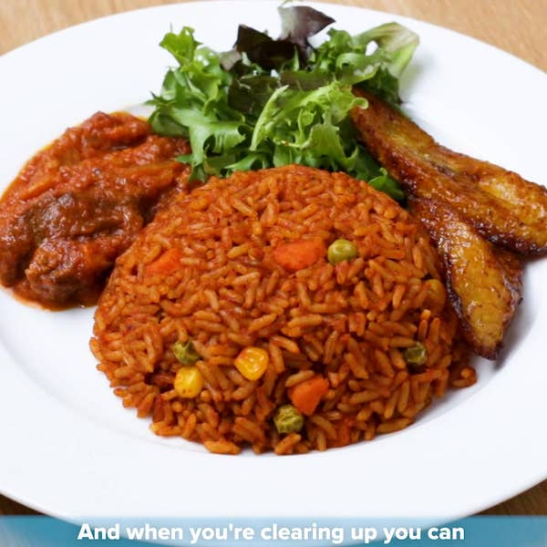

Jollof

Description
Jollof rice is a beloved west african one pot dish made with rice,tomatoes,onion,variety of spices and a protein of your choice.
It is a dish which is very popular in countries like Ghana,Nigeria and Senegal.The beauty of jollof rice lies in its versality ,that is,ingredients can vary from region to region,with each giving it a nice twist.
Ingredients
- Vegetable oil
- Onion
- Habanero pepper
- Fresh tomatoes
- Tomatoe paste
- Spices(ginger,garlic,curry powder,grounded rosemary)
- Seasoning and salt to taste
- Rice
- Chicken
- Vegetables(Green bell pepper,carrot,spring onions,lettuce and cabbage)
- Ripe plaintain
Steps
- Wash your chicken thoroughly and place it in a pot over medium heat
- Blend together the ginger,garlic,onion and habanero pepper until smooth
- Pour the blended mixture over the chicken in the pot and add salt and your preferred seasonings to taste
- Cook it until tender, once cooked ,remove the chicken and fry it in hot oil until golden brown.Set aside
- Chop some onions and fresh tomatoes and then place another pot on medium heat and add a reasonable amount of oil.
- Stir fry the onion in the oil until soft and translucent,add the chopped fresh tomatoes and cook for few minutes
- Add the tomatoe paste to the mixture and continue cooking for sbout 10 minutes
- Once the mixture is well cooked,add the stock solution from the chicken and add yor preferred spices,seasoning and salt to taste
- Add alittle bit of water and stew and simmer for 5 minutes
- Add your washed rice to the mixture and stir to for a uniform mixture
- Add a small amount of water just enought to cook the rice but not too much to avoid making it too soft
- Lower the heat and cover the pot,allowing the rice to cook slowly.Stir occasionally to prevent burning
- While the jollof is cooking, peel your plantains and place it in a mixture of salt and water for few minutes
- Heat oil in a frying pan and fry the plantains until golden brown
- Wash your vegetables and chop them into desired shappes and sizes for serving
- Once the rice is fully cooked and liquid has been absorbed , your jollof is ready to be served. Serve the rice with fried plantains,chicken and vegetables.